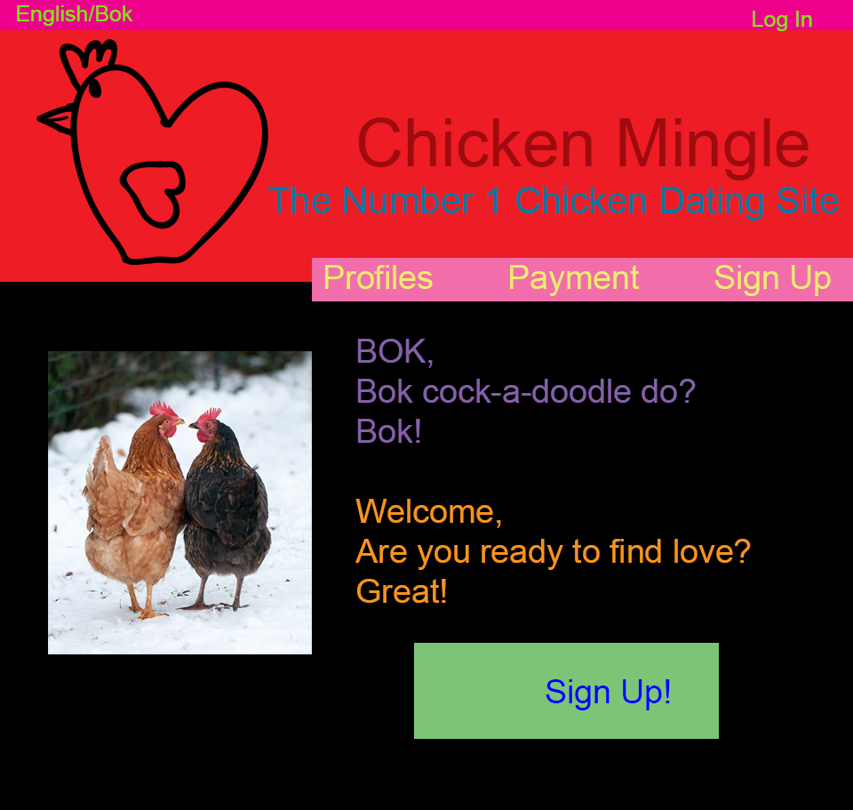
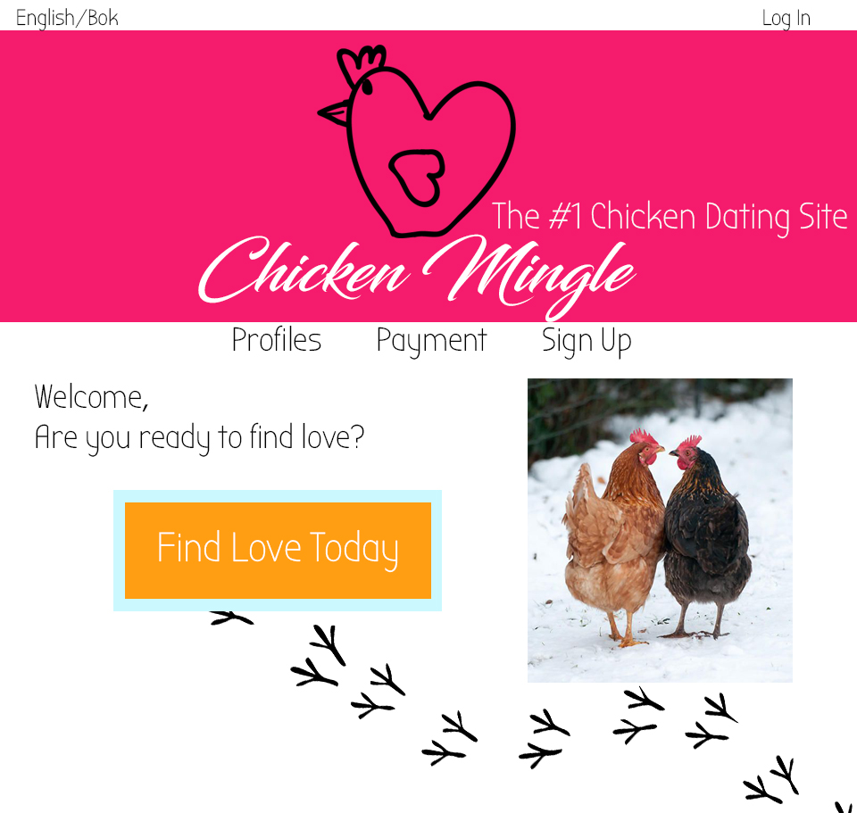

Collaborative Feedback
Group Feedback
-
Instead of reading off of the paper, the information could have been memorized therefore more eye contact could have been made with the audience to make them feel more engaged.
-
Use of visual elements helped the audience understand what was being said also followed by examples which then allowed the audience to see exactly what was required. The visual elements were good quality and colourful which makes them more appealing to the eye and more captivating for the audience (allows for visual flow across the page)
-
This group presented with loud clear voices and good posture
Chicken Mingle Website Feedback
-
The colour scheme used in this website are distracting because they range drastically across the colour spectrum. Limiting the colour scheme to about 3-5 colours would be more appealing and pleasing to eye. This would also allow the visitor to focus on the content.
-
The font sizes used in this webpage should be different based on their relevance. Instead of using the same font size a set size for the nav bar should be used, a set size for the headings, and a set size for the body copy should be used so that the page looks unified.
-
The text located inside of the "sign up" button was not centered which is unappealing to a visitor and is also a sign of unprofessionalism. By having the text inside of the sign up button centered it would be more appealing and professional.
Original

After Changes
